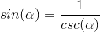
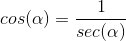
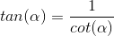
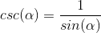
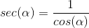
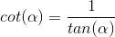

The recirprocal identities are the simplest ones. They show a fundamental relationship between sin and csc, cos and sec, and tan and cot.
sin and csc
cos and sec
tan and cot
Considering these, the reverse then logically follows.
csc and sin
sec and cos
cot and tan
